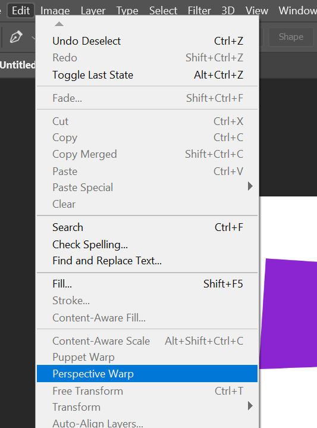
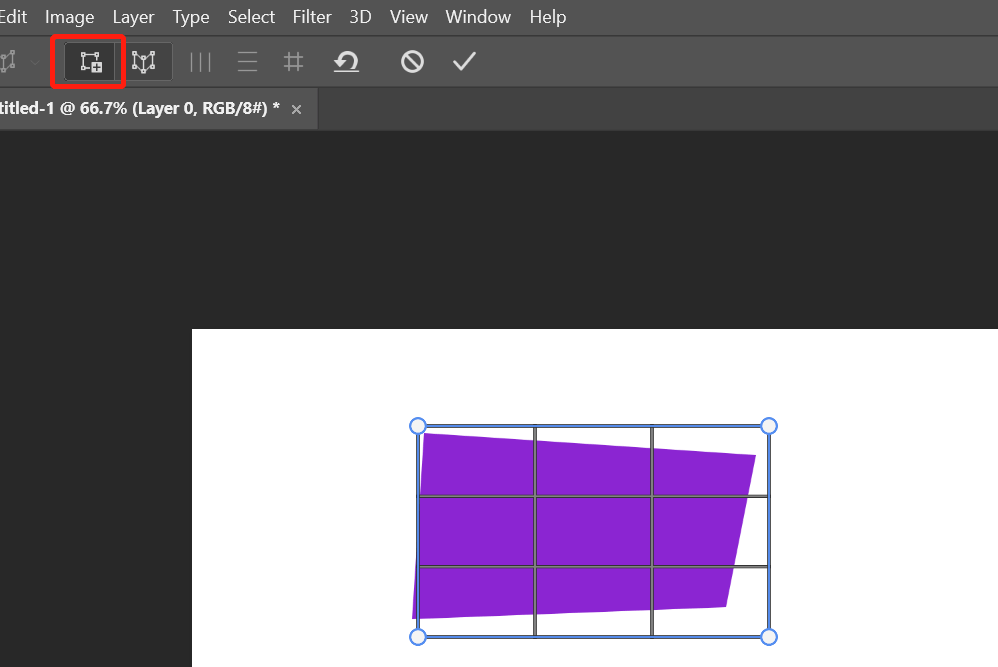
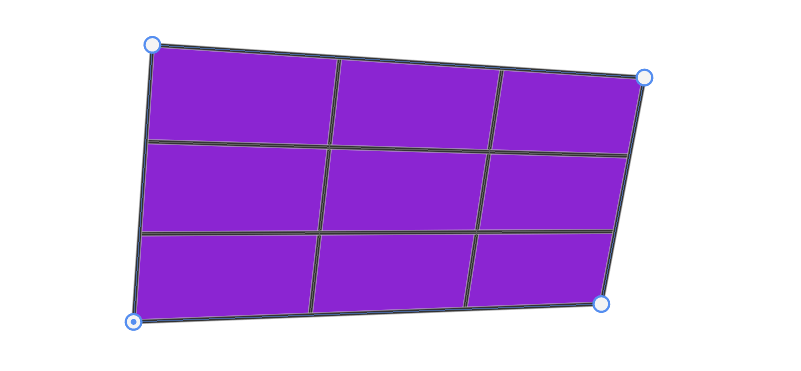
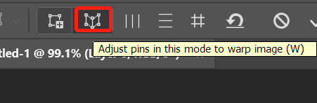
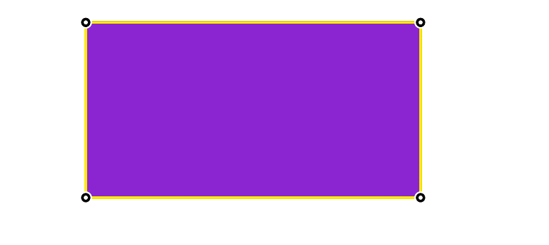

使用 perspective warp 来修复变形 in Photoshop

在使用相机拍摄一些长方形物体时，由于不能很好的控制视角和高低，拍摄出来的物体会出现变形而不是正确的四方形。后期我们可以使用 ps 的 perspective warp 工具来进行修复。
关于 perspective warp 的详细用法，参考：https://blog.niekun.net/archives/615.html
上图模拟本来是正方形的物体，由于拍摄问题产生的变形。
选择 edit - perspective warp：

选择第一个 layout 工具，拖动选择出物体的区域：

通过调整四角控制点来精确选中物体四周：

切换到 warp 工具开始进行调整：

这里需要使用的矫直命令，按住 shift 键点击四条边，可以自动将四边垂直/水平：

以上就完成了变形修复。perspective warp 的更多功能参数我上面的文章。
标签：无